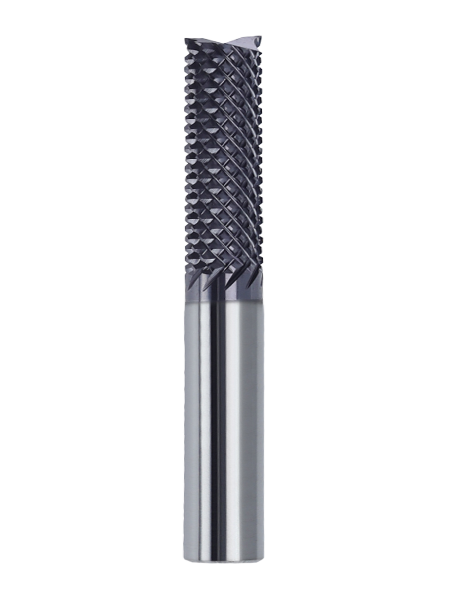

跳至产品系列
首页
关于
公司介绍
生产实力
品质理念
产品
全部商品与规格
4刃钨钢铣刀
3刃锥度铣刀
2刃锥度球刀
2刃倒角刀
玉米铣刀
智能选型与参数计算
下载
联系方式
中文
菜单
HUARUI PRECISION TOOLS
精于形
锐于刃。
让每一道切削，都恰到好处。
桦锐精密刀具，为细致加工而来。
探索产品系列
近观刀具细节
硬质合金刀具
五大产品系列
THE TOOL COLLECTION
自动浏览
ENGINEERED FOR THE DETAIL

4刃钨钢铣刀
平面、侧壁与轮廓铣削
近看刃口
向下探索
探索五大系列
THE COLLECTION
四刃铣刀
锥度铣刀
锥度球刀
倒角刀
玉米铣刀
THE COLLECTION
找到你的切削利器。
从平面铣削到曲面细修，
让刀具形态，匹配加工所需。
查看完整商品目录